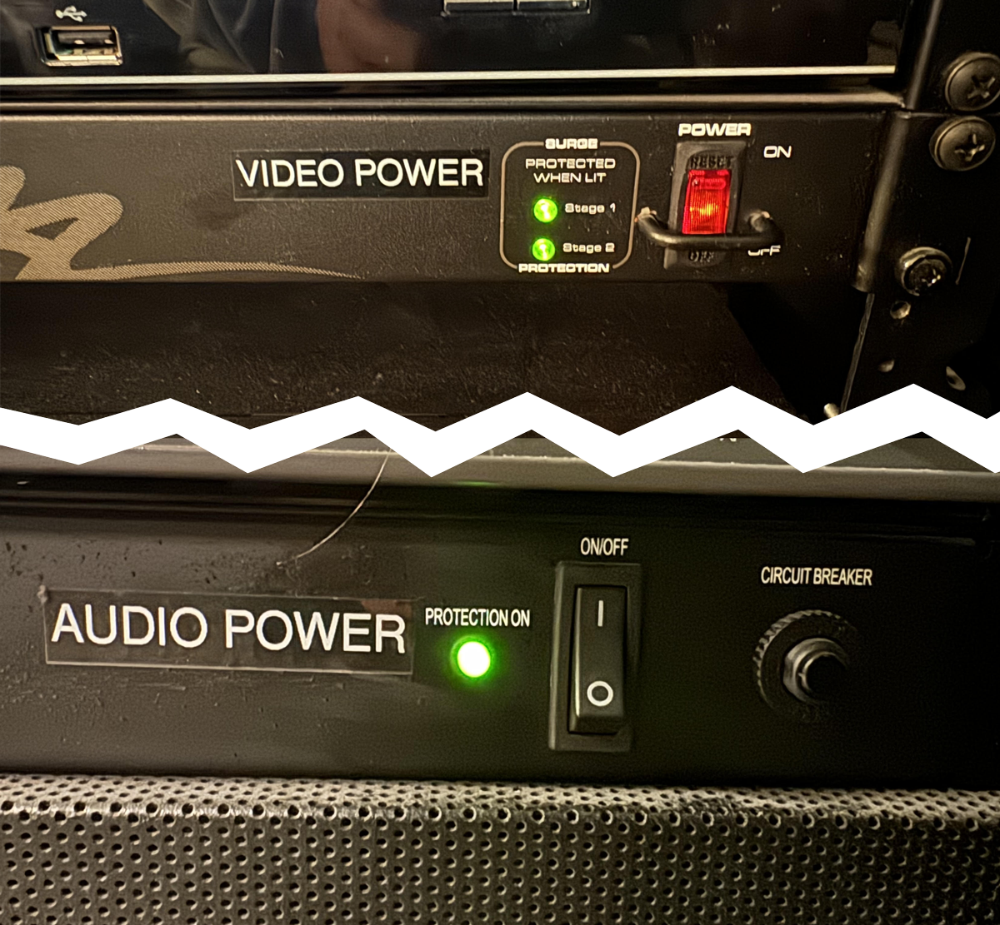
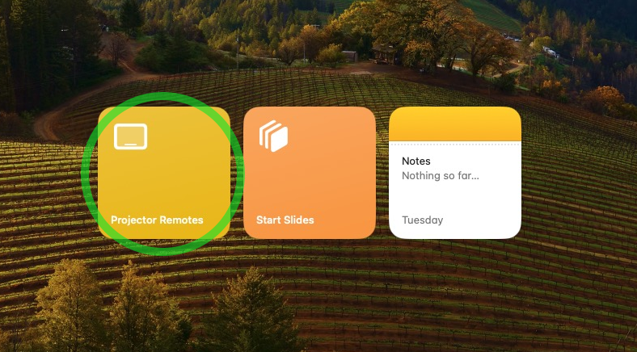
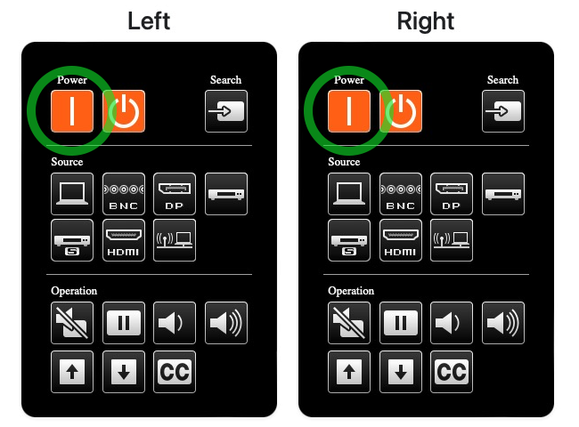
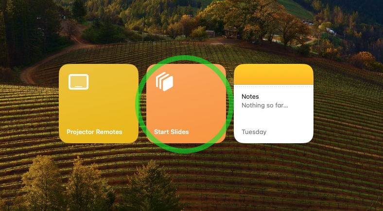
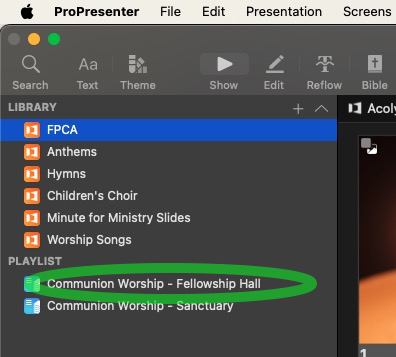
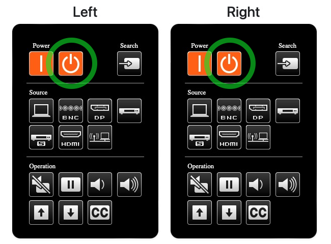

Slideshows Quick Start Guide
1. Getting Started**
- The SlideShow Computer in Fellowship Hall should already be powered on, if not, press the power button on the Computer behind the Left monitor in the projection booth (Mac Studio).
- If the computer asks for a password, it is
fpca(all lowercase). - Turn on the Video and Audio power switches on the rack in the projection booth. 
2. Powering on the Projectors
- The projectors can be powered on remotely by clicking the Projector Remotes button on the Slideshow Computer. 
- Click the Power On button for both projectors. The projectors will take a few moments to warm up and display the image. 
3. Launching ProPresenter
- Open ProPresenter by clicking on the Start Slides button on the Slideshow Computer. 
Note: ProPresenter 7 will open automatically. If it does not, click on the ProPresenter icon in the dock at the bottom of the screen.
4. Loading the Slideshow
- If you presenting slides on Sunday Morning, the shlidshow should already be loaded. Locate the correct Playlist in the left sidebar and click on it to load the slides.

Quick Info About ProPresenter
-
It is essenetially a more powerful version of PowerPoint. For now, let's focus on the basics... Playlists, Presentations and Slides.
-
A Playlist is a collection of Presentations. A Presentation is a collection of Slides.
-
There is a preview of the current slide in the top right corner of the screen, as well as on the monitor mounted above the main monitor.
5. Controlling the Slideshow
- To advance to next slide, press the Space or the Right key on the keyboard. You may also click on any slide to change to that slide.
- To go back to the previous slide, press the Left key on the keyboard.
- To go to the next Presentation in the Playlist, press the Down, and to go to the previous Presentation, press the Up. Note: This will NOT display the first slide in the new Presentation, you will need to press the Space to display the first slide.
Pro-tip: Utilizing blank slides is a great way to find your place if you lose track of where you are in the slideshow. Quickly select a blank slide and then find your place in the presentation.
6. Ending the Slideshow
- It is best practice to allow the announcement slides to run at least once after Worship ends, so after the Benediction scroll back up to the Welcome & Announcemnts sectiona and click the Announcements slide to display it.
- Once it's time to shut down, start by quitting ProPresenter. You can do this by clicking on the ProPresenter menu in the top left corner of the screen and selecting Quit ProPresenter, or by pressing Cmd+Q on the keyboard.
7. Powering off the Projectors
- Next, power off the projectors by clicking the Projector Remotes button on the Slideshow Computer and clicking the Power Off button for both projectors. (If the remotes window is closed, you can reopen it by clicking the Projector Remotes button again on the desktop.) 
Note: Please leave the Slideshow Computer on, as the Worship Tech Director may need to access it remotely.
8. Powering off the AV Rack
- Finally, turn off the Video and Audio power switches on the rack in the projection booth.
Need Help?
If you have any questions or need assistance, please reach out to the Worship Tech Director or another member of the Productions Team.
Sean Metzgar, Worship Tech Director
610-297-2543 (Call or Text)
sean.metzgar@fpcallentown.org
Spinnaker Support, (Call Sean First)
610-725-9195 (Call or Text)
If you don't mind having your contact info listed here, please let Sean know.